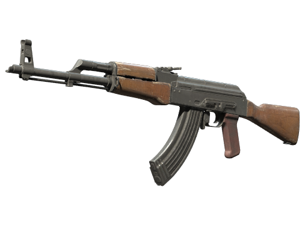

O capítulo 8 do livro mostrou que o spray dos rifles é uma tabela fixa e que "spray control" é a habilidade de subtraí-la em tempo real: desvio = (1 − c)·R(k). Este app mede o seu c. Segure o gatilho, arraste o mouse contra o padrão e mantenha os impactos no alvo — cada rajada devolve a fração do recuo que você removeu.

1,0×Como treinar: primeiro, com o "padrão bruto" ligado, dispare uma rajada sem mexer o mouse e veja o desenho que a arma faz sozinha — esse é o R(k) do capítulo 8. Com o mouse travado e antes de atirar, a curva reversa aparece tracejada saindo da mira: é o caminho exato que a sua mão vai percorrer, o padrão de cabeça para baixo. Depois, segure o gatilho até o fim do pente e mantenha o ponto amarelo colado na mira — ele anda por essa curva no ritmo dos tiros. A curva inteira permanece visível durante a rajada — o trecho que ainda falta fica mais brilhante — porque decorar o desenho completo é parte do treino. Leia as bolinhas a cada rajada: acima do alvo, puxe mais cedo e mais rápido; abaixo, você puxou demais. O c do painel diz quanto do padrão você removeu — jogadores treinados vivem acima de 85%.
Honestidade de modelagem, como no livro: o padrão de cada arma aqui é
estilizado — gerado da magnitude e das variâncias da
planilha com semente fixa, então é idêntico em toda rajada e aprendível,
mas não é a tabela real do jogo — e é por isso que a curva daqui não
coincide com a do workshop de treino. O caminho para fechar essa
lacuna está aberto e é medição, não engenharia reversa: o seletor
"padrão" acima liga a opção medido in-engine assim que
recoil_patterns_measured.json for preenchido com
sprays gravados nesta build (mediana por índice de tiro, com
procedência). Enquanto isso, o app treina o gesto (a subtração
suave e contínua), não o gabarito decorado; para decorar o desenho exato
de cada arma, use os mapas de treino dentro do CS2. A escala do recuo na
tela e o ruído opcional de dispersão são calibrações ilustrativas. O c é
estimado por rajada como 1 − (erro médio dos impactos ÷ recuo bruto
médio), com rajadas de pelo menos 8 tiros.